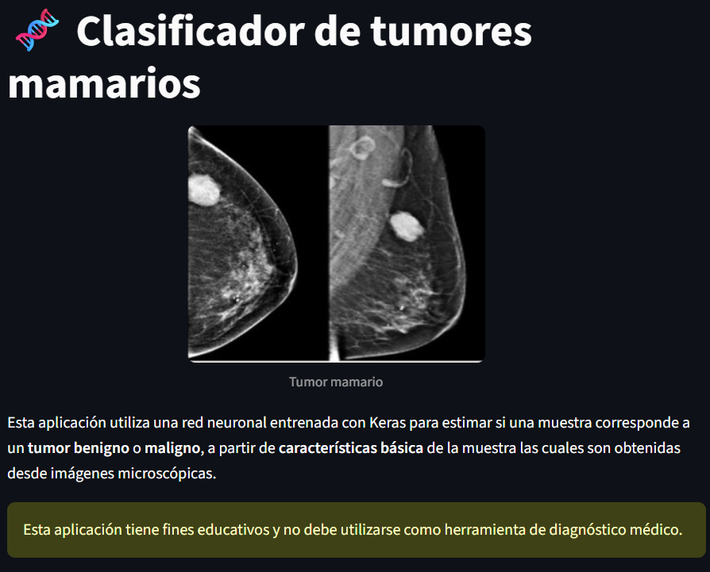
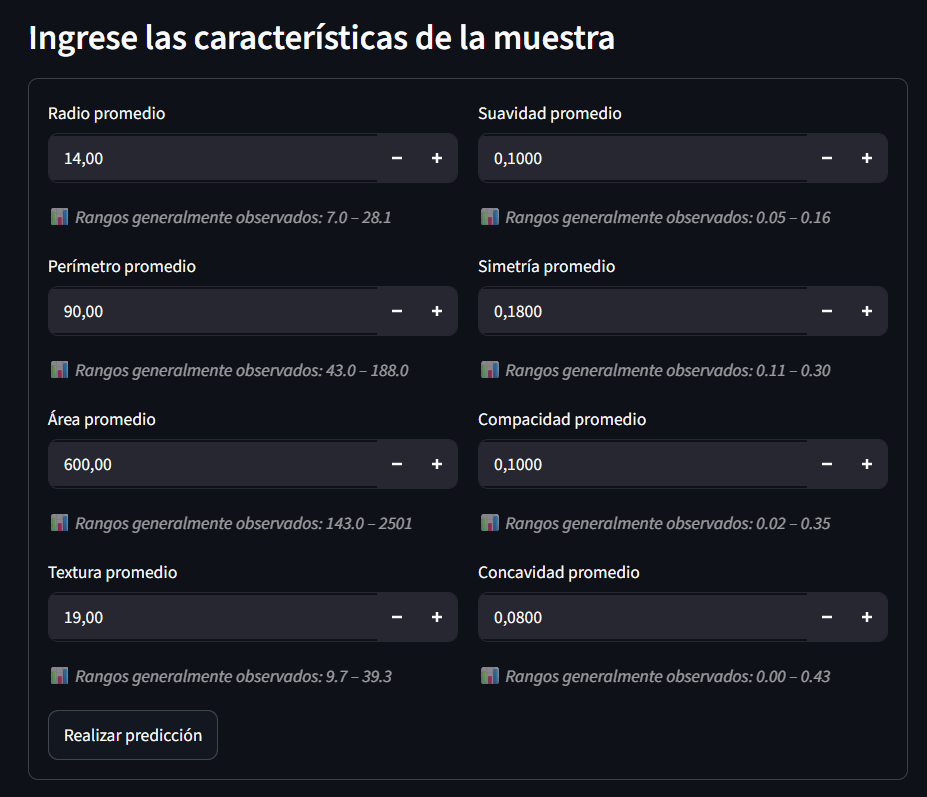
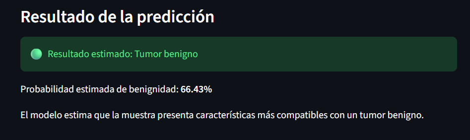
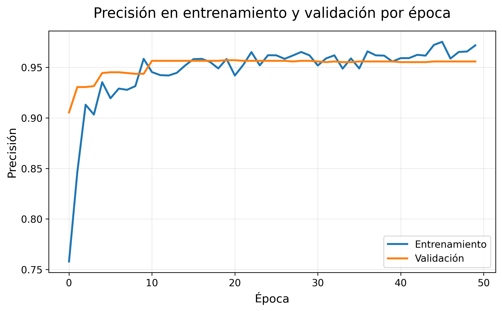

Proyecto académico
Clasificación de tumores mamarios
Aplicación web desarrollada con TensorFlow/Keras y Streamlit para clasificar tumores mamarios como benignos o malignos a partir de características clínicas, integrando entrenamiento del modelo y despliegue interactivo.Problema
El cáncer de mama es uno de los tipos de cáncer más frecuentes a nivel mundial y una de las principales causas de muerte por cáncer en mujeres 1. La detección temprana desempeña un papel fundamental para mejorar el pronóstico y aumentar las probabilidades de un tratamiento exitoso.
En este proyecto se aborda un problema de clasificación supervisada cuyo objetivo es determinar si un tumor mamario corresponde a un tumor benigno o maligno a partir de características extraídas de imágenes digitalizadas de biopsias por aspiración con aguja fina (Fine Needle Aspirate, FNA).
Solución
Se desarrolló un flujo completo de aprendizaje profundo utilizando el conjunto de datos Breast Cancer Wisconsin2, incluyendo preprocesamiento de los datos, entrenamiento de una red neuronal implementada con TensorFlow/Keras y evaluación de su desempeño sobre datos no utilizados durante el entrenamiento.
Posteriormente, el modelo entrenado fue integrado en una aplicación web interactiva desarrollada con Streamlit, permitiendo realizar predicciones en tiempo real a partir de ocho características clínicas seleccionadas.
| Variable | Descripción |
|---|---|
| mean radius | Tamaño promedio de los núcleos celulares observados en la muestra. |
| mean perimeter | Longitud promedio del contorno de los núcleos celulares. |
| mean area | Área promedio ocupada por los núcleos celulares. |
| mean texture | Variación en la intensidad de los píxeles de la imagen microscópica. |
| mean smoothness | Qué tan lisos o regulares son los bordes de los núcleos celulares. |
| mean symmetry | Qué tan simétrica es la forma de los núcleos celulares. |
| mean compactness | Grado de compacidad de los núcleos celulares. |
| mean concavity | Presencia de hendiduras o irregularidades en el borde de los núcleos celulares. |
Tabla 1. Variables utilizadas como entrada de la red neuronal para la clasificación de tumores mamarios.
Aunque el conjunto de datos original contiene 30 características, para esta aplicación se seleccionaron ocho variables representativas con el objetivo de simplificar la interacción del usuario, manteniendo un buen desempeño del modelo y una interfaz fácil de utilizar.
| Capa | Tipo | Salida |
|---|---|---|
| Entrada | 8 variables clínicas | 8 neuronas |
| Capa oculta 1 | Dense (ReLU) | 32 neuronas |
| Regularización | Dropout | 30% |
| Capa oculta 2 | Dense (ReLU) | 16 neuronas |
| Regularización | Dropout | 30% |
| Salida | Dense (Sigmoid) | 1 neurona |
Tabla 2. Arquitectura de la red neuronal utilizada para la clasificación de tumores mamarios.
1. Inicio

La aplicación presenta su propósito y explica brevemente el funcionamiento del modelo de clasificación.
2. Ingreso de datos

El usuario ingresa las ocho variables clínicas utilizadas como entrada de la red neuronal.
3. Predicción

El modelo estima si la muestra corresponde a un tumor benigno o maligno e informa la probabilidad asociada.
Figura 1. Flujo de uso de la aplicación desarrollada con Streamlit, desde la pantalla inicial hasta la obtención de una predicción.
Resultados y conclusión
El modelo obtuvo un alto desempeño en la clasificación de tumores benignos y malignos, demostrando que las características clínicas seleccionadas contienen información suficiente para apoyar este problema de clasificación.

Como puede observarse, la precisión aumenta rápidamente durante las primeras épocas y luego se estabiliza alrededor del 95 %. Además, la similitud entre ambas curvas sugiere que el modelo mantiene un desempeño consistente tanto sobre los datos de entrenamiento como sobre los datos de validación.
Para complementar este análisis, se evaluó el desempeño del modelo sobre el conjunto de prueba mediante distintas métricas de clasificación.
| Métrica | Valor |
|---|---|
| Accuracy | 95,6 % |
| Recall | 90,3 % |
| F1-score | 92,9 % |
| Loss | 0,203 |
Tabla 3. Métricas de desempeño obtenidas por la red neuronal sobre el conjunto de prueba.
Los resultados muestran que el modelo mantiene un buen equilibrio entre la precisión de sus predicciones y su capacidad para identificar correctamente las muestras correspondientes a la clase positiva (tumores benignos). En particular, la precisión de 95,6 % indica que la gran mayoría de las muestras clasificadas como benignas efectivamente pertenecían a esa categoría. Por su parte, el recall de 90,3 % muestra que el modelo logró identificar correctamente cerca del 90 % de los tumores benignos presentes en el conjunto de prueba.
En conjunto, este proyecto permitió desarrollar un flujo completo de Deep Learning, desde el preprocesamiento de los datos y el entrenamiento de una red neuronal hasta la evaluación, serialización y despliegue del modelo en una aplicación web interactiva.
Si bien esta aplicación tiene un propósito exclusivamente educativo y no constituye una herramienta de diagnóstico médico, el proyecto demuestra el potencial del aprendizaje profundo para apoyar tareas de clasificación en el ámbito de la salud. Modelos como el desarrollado pueden complementar la labor de los profesionales de la salud, proporcionando una segunda opinión basada en datos y contribuyendo a procesos de evaluación clínica cuando se utilizan junto con la evidencia médica y el juicio profesional.
Repositorio
Este proyecto nació como parte del curso Plataformas de Machine Learning del Diplomado en Machine Learning de la Pontificia Universidad Católica de Chile (UC). Posteriormente fue reorganizado y documentado para formar parte de este portafolio, incorporando una estructura orientada a facilitar la reproducción del análisis y la comprensión del flujo completo de trabajo.
Contenido del repositorio
- Dataset Breast Cancer Wisconsin utilizado para el entrenamiento.
- Notebook con el desarrollo completo del modelo.
- Red neuronal implementada con TensorFlow/Keras.
- Aplicación web desarrollada con Streamlit.
- Modelo entrenado (model.keras) y escalador (scaler.joblib).
- Configuración reproducible mediante Poetry y Docker.